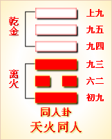

<!DOCTYPE html PUBLIC "-//W3C//DTD XHTML 1.0 Transitional//EN" "http://www.w3.org/TR/xhtml1/DTD/xhtml1-transitional.dtd">

<html xmlns="http://www.w3.org/1999/xhtml">
<head>
<meta content="text/html; charset=utf-8" http-equiv="Content-Type"/>
<title>周易第十三卦：同人卦 天火同人 乾上离下原文解释翻译-周易-国学�?/title>
<meta content="周易,同人�?天火同人,乾上离下" name="keywords"/>
<meta content="周易,同人�?天火同人,乾上离下，周易第十三卦：同人�?天火同人 乾上离下解释翻译�?（天火同人）乾上离下 《同人》：同人于野，亨。利涉大川。利君子贞�?初九，同人于门，无咎�?六二，同人于宗，吝�?九三，伏戎于莽，升其高陵，三岁不兴�?九四，乘其墉，弗" name="description"/>
<link href="css.css" media="screen" rel="stylesheet" type="text/css"/>
</head>
<body>
<div class="gxlayout">
</div>
<div class="gxlayout">
<div class="ihead">
<div class="title"><a>周易</a></div>
<ul class="more fl">
<li>当前位置:<a>国学梦首�?/a> &gt; <a>国学经典</a> &gt; <a>经部</a> &gt; <a>四书五经</a> &gt; <a>周易</a> &gt;  周易第十三卦：同人卦 天火同人 乾上离下原文解释翻译</li>
</ul>
</div>
<div class="gxbl fl">
<div class="latitle">

<h1>周易第十三卦：同人卦 天火同人 乾上离下</h1>
<div class="lainfo"><span>作者：佚名</span> <span>全集�?a>周易</a></span> <span>来源：网�?/span> <span>[<a rel="nofollow" target="_blank">挑错/完善</a>]</span></div>
</div>
<div class="lacontent">
<div class="clearfix"></div>
<!--<!-- allowfullscreen="" frameborder="0" height="36" src="http://www.ximalaya.com/swf/sound/yellow.swf?id=2754424&amp;auto=true" width="260"></iframe>-->
<p style="text-align:center"></p>
<p style="text-align:center"><a>周易第十三卦详解</a></p>
<p style="text-align:center"><a>第十三卦初九爻详�?/a>　<a>第十三卦六二爻详�?/a>　<a>第十三卦九三爻详�?/a></p>
<p style="text-align:center"><a>第十三卦九四爻详�?/a>　<a>第十三卦九五爻详�?/a>　<a>第十三卦上九爻详�?/a></p>
<p style="text-align:center"> </p>
<p><strong><a target="_blank">周易</a>第十三卦同人 天火同人 乾上离下</strong></p>
<p>同人：同人于野，亨。利涉大川，利君子贞�?/p>
<p>彖曰：同人，柔得位得中，而应乎乾，曰同人。同人曰，同人于野，亨。利涉大川，乾行也。文明以健，中正而应，君子正也。唯君子为能通天下之志�?/p>
<p>象曰：天与火，同�?君子以类族辨物�?/p>
<p>初九：同人于门，无咎。象曰：出门同人，又 谁咎也�?/p>
<p>六二：同人于宗，吝。象曰：同人于宗，吝道也�?/p>
<p>九三：伏戎于莽，升其高陵，三岁不兴。象曰：伏戎于莽，敌刚也。三岁不兴，安行也�?/p>
<p>九四：乘其墉，弗克攻，吉。象曰：乘其墉，义弗克也，其吉，则困而反则也�?/p>
<p>九五：同人，先号啕而后笑。大师克相遇。象曰：同人之先，以中直也。大师相遇，言相克也�?/p>
<p>上九：同人于郊，无悔。象曰：同人于郊，志未得也�?/p>
<p><strong><a href="13_同人�?html" target="_blank">同人�?/a>象，天火同人卦的象征意义</strong></p>
<p><strong>同人卦为<a target="_blank">易经</a>64卦第十三卦，天火同人卦有哪些具体的象征意义呢�?/strong></p>
<p>天火同人卦是异卦相叠而成，下卦为离，上卦为乾。乾为天，为阳，高高在上，把光明洒向人间，给人带来光明，带来温暖。离为火，在下，火光熊熊，也能给人带来光明，带来温暖。由此可见，太阳和火两者的位置虽然不同，但是作用却是一样，可谓是志同道合，由此称为同人�?/p>
<p>太阳与火光，两者还有一个特点都能公正待人，绝无私心。对谁都一样，无偏无倚。平等对待大地上的万物�?/p>
<p>从另一个角度看，本卦卦名为“同人”，“同”与“兴”同源，其初始字形为“口”，中间的方形表示重物即“夯”，口字表示喊号子，周围的手形表示共同打夯的几个人，全字表示在号子的指挥下几个人共同打夯。打夯时几个人要同时用一样的力向外拉，所以该字有“同时、共同、相同”等含义。卦名“同人”的基本意义就是指几个共同打夯的人，引伸有几个人像打夯那样共同行动，或我与他人相同，等等。所以同人之卦，喻示着志同道合的人们为实现共同的目标而做的各种努力�?/p>
<p>天火同人卦位�?a href="12_否卦.html" target="_blank">否卦</a>之后，《序卦》之中这样解释道：“物不可以终否，故受之以同人。”事物不可能一直处于闭塞之中，终要与其同类聚合，所以接下来就是同人卦�?/p>
<p>《象》曰：天与火，同�?君子以类族辨物。这是告诉人们说，君子要明白物以类聚，人以群分的道理，明辨事物，求同存异，团结众人以治理天下�?/p>
<p>同人卦象征上下和同，属于中上卦。《象》中这样来断此卦：心中有事犯猜疑，谋望从前不着实，幸遇明人来指引，诸般忧闷自消之�?/p>
<p>从卦象上分析，上卦为乾为天，下卦为离为火，在天底下生起一堆火，便是同人卦的卦象。这个场面，正是上古时期、甚至是原始时期人类的生活写照�?/p>
<p>大家聚集在一堆篝火旁取暖，烧烤食物，一同商论有关生存的大问题，或者一同载歌载舞，共同享受欢乐的时光。在当时的条件下，没有精致而豪华的住房，没有精美而实用的饮食器具，也没有后来的乐�?a target="_blank">先进</a>，也没有后来的音乐动听。可是，尽管条件艰苦，但是大家聚在一起，同心同德，极其快乐。这便是同人卦的内涵�?/p>
<p>关键词：周易,同人�?天火同人,乾上离下</p>
<div class="clearfix"></div>
<div class="title"><div class="thot">解释翻译</div><span>[挑错/完善]</span></div><p>(<a href="13_同人�?html" target="_blank">同人�?/a>)：在郊外聚集众人，吉利。有利于渡过大江大河。对君子有利的占问�?/p>
<p>初九：在王门前聚集众人，没有灾祸�?/p>
<p>六二：在宗庙聚集众人，不吉利�?/p>
<p>九三：把军队隐蔽在密林草丛中�?并占领了制高点，但却长时间不能取�?/p>
<p>九四：登上敌方的城墙，仍然没有把城攻下。吉利�?/p>
<p>九五：会集起来的众人先大声哭喊，然后欢笑，因为大军及时赶到，转败为胜�?/p>
<p>上九：在郊外聚集众人 没有悔咎�?/p>
<div class="title"><div class="thot">注释出处</div><span>[请记住我�?国学�?www.guoxuemeng.com]</span></div><p>①本卦的标题是同人。原经文卦象后没有“同人”二字。同的意思是�?合，同人就是聚合众人。由于“同人”二字出现的次数多，本卦用来作标题�?全卦的内容专门讲作战打仗�?/p>
<p>②野：郊外。古时称邑外为郊，郊外为野�?/p>
<p>③门：这里指王门。古时遇到国家大事，常在王门前聚众训话、誓师、演 练等�?/p>
<p>④宗：祭祖祖先的宗庙�?/p>
<p>⑤戎：军队。伏戎：把军队隐蔽起 来。莽：茂密的树林草丛�?/p>
<p>(6)高陵：高地�?/p>
<p>(7)三岁：三年，这里�?多年。兴：举，起，这里指夺取�?/p>
<p>(8)乘：登上。墉(yong)：城墙�?/p>
<p>(9)号咷(tao)：嚎陶，大声哭喊�?/p>
<div class="clearfix"></div>
<div class="contextdhall clearfix">
<ul>
<li>上一篇：<a href="12_否卦.html">周易第十二卦：否�?天地�?乾上坤下</a> </li>
<li>下一篇：<a href="14_大有�?html">周易第十四卦：大有卦 火天大有 离上乾下</a> </li>
<li>全   文�?a>周易</a></li>
</ul>
</div>
</div>
<div class="clearfix mt20"></div>
</div>
</div>
<div class="clearfix mt20"></div>
<div class="gxlayout">
</div>
<script>
var _hmt = _hmt || [];
(function() {
  var hm = document.createElement("script");
  hm.src = "https://hm.baidu.com/hm.js?872034ded637616c5cf8e173a446bb0e";
  var s = document.getElementsByTagName("script")[0];
  s.parentNode.insertBefore(hm, s);
})();
</script>
</body>
</html>
